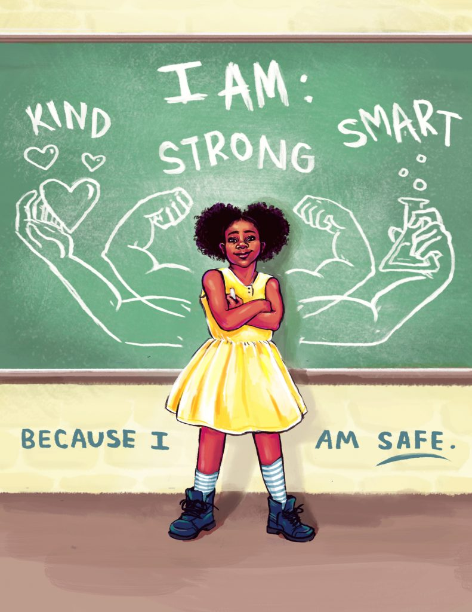

Stop Harrasments
Make a good nation
why it is needed in our socity ?
Women safety in India is widely discussed everywhere nowadays. It has now become a major issue. The crime rate is on the spike. Women are neither safe outside nor at home. Women travelers from other countries are also in a dubious state while thinking about coming to India. However, this fear cannot keep them away from any kind of social activity. There are laws but there should be proper safety measures which we have to follow strictly to protect the women from violence.Along with essays on Women's safety in India, there are many other sample essays being provided on our site and mobile app as well. Take a look into it for further reference.According to the National Crimes Records Bureau (NCRB), India recorded 88 rape cases every day in 2019. NCRB report highlights that rape vulnerability of a girl or woman has increased up to 44% in the last 10 years.
conclusion, women can be powerful actors for peace, security, and prosperity. When they participate in peace processes and other formal decision-making processes, they can play an important role in initiating and inspiring progress on human rights, justice, national reconciliation and economic revitalization. They can also build coalitions across ethnic and sectarian lines and speak up for marginalized and minority groups. Investing in women's leadership is therefore smart security as well as smart development
what can we do ?
- Be aware of your surroundings. Don’t let your guard down
- Don’t take eve teasing lightly
- As much as possible avoid late night travel using public transport
- While using 2 wheeler be sure to wear helmet at all times. Don’t stop for any stranger
- While travelling at night don’t keep your phone in your hand
- learn self defence skills and carry pepper spray with you